Example: enzyme kinetics¶
Consider the following simple enzymatic reaction:
 .
.
In this system, the enzyme  acts as a catalyst for the transformation
of the substrate
acts as a catalyst for the transformation
of the substrate  into the product
into the product  , via the complex
, via the complex
 .
.
We can write this as a system of three reactions
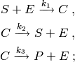
with kinetic parameters
 and initial copy counts
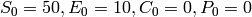.
and initial copy counts
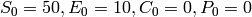.
Note
This type of enzymatic reaction is commonly approximated by Michaelis-Menten kinetics. We will not employ the Michaelis-Menten approximation here, but instead solve the chemical master equation for the full system of reactions.
Defining the model¶
We shall use species counts as the state space for this model.
Species count functions¶
Let 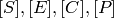 denote the copy counts of the species 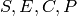.
By considering conservation laws, we obtain two constraints on the species counts:
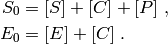
It is sufficient to track the copy counts of two of the species. We shall track 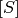 and 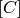.
Define 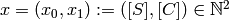.
Then we can express the counts of all four species as functions of
 : and the initial counts of and :
: and the initial counts of and :
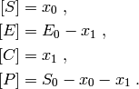
We can translate this formulation quite naturally into Python code. Let each state x in the state space be a tuple of length 2. We shall define x[0] as , the copy count of the substrate, and x[1] as , the copy count of the complex. We define four functions s, e, c, p that take a state x and return the corresponding species count:
s_0 = 50
e_0 = 10
s = lambda *x : x[0]
e = lambda *x : e_0 - x[1]
c = lambda *x : x[1]
p = lambda *x : s_0 - x[0] - x[1]
For example, to evaluate the copy count of the species , given
that there are 2 copies of and 3 copies of , we would
call the function p with the arguments 2 and 3, that is, p(2, 3).
This function call will return the integer 45
(recall 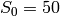, so 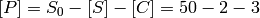).
Propensity functions¶
We can express the propensity functions 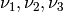 of the three reactions in terms of the state 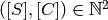 :
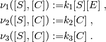
Equivalently, in Python we may define these propensity functions in terms of our existing species count functions s, e, c and p:
propensities = (
lambda *x : 0.01*s(*x)*e(*x),
lambda *x : 35.0*c(*x),
lambda *x : 30.0*c(*x),
)
State transitions¶
We must now define the state transitions associated with these three reactions.
Recall our chosen state representation is
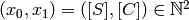. The first
reaction 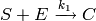 reduces the copy count of
by one, but increases the copy count of by one.
In 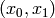 coordinates, this corresponds to the transition:
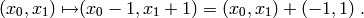
We represent this transition in Python code as the tuple (-1, 1).
Since the second reaction is the inverse of the first reaction, the transition for the second reaction 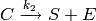 is the negation (i.e. the additive inverse) of the transition for the first reaction, that is, (1, -1).
The transition for the third reaction 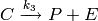
is (0, -1), as this reaction consumes one copy of , and neither
produces nor consumes .
Note
Although the three reactions also modify the copy counts of the species
and , these modifications do not need to be
explicitly accounted for by the transitions. The transitions only need
to contain the change in species counts for those species in the state space.
We define a tuple named transitions which contains the transitions for all three reactions, using the same ordering as the propensities tuple containing the propensity functions:
transitions = (
(-1, 1),
(1, -1),
(0, -1)
)
Creating the model¶
By combining the species count functions with the propensity functions and the transitions we may construct a model m:
from cmepy import model
s_0 = 50
e_0 = 10
# species count function definitions
s = lambda *x : x[0]
e = lambda *x : e_0 - x[1]
c = lambda *x : x[1]
p = lambda *x : s_0 - x[0] - x[1]
# model definition, in terms of species count functions
m = model.create(
species_counts = (s, e, c, p, ),
propensities = (
lambda *x : 0.01*s(*x)*e(*x),
lambda *x : 35.0*c(*x),
lambda *x : 30.0*c(*x),
),
transitions = (
(-1, 1),
(1, -1),
(0, -1)
),
)
Observe that the propensity functions and state transitions for the reactions are passed as keyword arguments to model.create, using the keywords propensities and transitions respectively. Note also that we have also passed a tuple containing the species count functions s, e, c and p as the keyword argument species_count.
Finishing touches¶
To complete the model, we will add additional keyword arguments shape, initial_state, name, species and reactions. These first two initial arguments control the extent of the state space, and the initial state of the probability distribution, while the latter three arguments are used to define names (as strings) for the model, the species, and the reactions, respectively.
We need to specify the shape of the state space for our model m. Recall states in our state space have the form 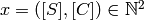. Recall also the constraints mentioned earlier in the Species count functions section. It follows that 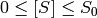, while 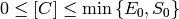. Therefore, the tuple of upper bounds for state space coordinates is 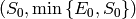. In Python, the corresponding minimal exclusive upper bound is the tuple (s_0 + 1, min(e_0, s_0) + 1). This is the value we use for the shape of our state space.
We also need to specify the initial state for our model. Recall that and 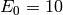, while 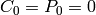. In 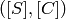 coordinates, these initial values are the state 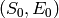. Therefore we set initial_state = (s_0, e_0).
The values of the name, species and reactions arguments are all straight-forward.
from cmepy import model
from cmepy.util import non_neg
s_0 = 50
e_0 = 10
# species count function definitions
s = lambda *x : x[0]
e = lambda *x : non_neg(e_0 - x[1])
c = lambda *x : x[1]
p = lambda *x : non_neg(s_0 - x[0] - x[1])
# model definition, in terms of species count functions
m = model.create(
name = 'enzyme kinetics',
species = ('S', 'E', 'C', 'P', ),
species_counts = (s, e, c, p, ),
reactions = ('E+S->C', 'C->E+S', 'C->E+P', ),
propensities = (
lambda *x : 0.01*s(*x)*e(*x),
lambda *x : 35.0*c(*x),
lambda *x : 30.0*c(*x),
),
transitions = (
(-1, 1),
(1, -1),
(0, -1)
),
shape = (s_0 + 1, min(s_0, e_0) + 1),
initial_state = (s_0, 0)
)
Now, the above model definition includes one unexplained touch : the use of the non_neg function from cmepy.util.
Recall the definition of the species count function
p = lambda *x : s_0 - x[0] - x[1].
If a + b > s_0, then p(a, b) < 0, that is, p returns a negative
integer for the species count of . Yuck!
Of course, this will only happen for nonsensical values of the copy count
a of , and the copy count b of .
To avoid issues arising with negative species
counts, we can simply ensure the species count function p is defined to be
zero for nonsensical inputs. We achieve this by using the non_neg function,
which acts more-or-less as follows:
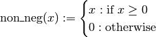
Using this non_neg function, we have modified our existing definitions of the species count functions e and p to read:
e = lambda *x : non_neg(e_0 - x[1])
p = lambda *x : non_neg(s_0 - x[0] - x[1])
Note
The actual implementation of the non_neg function in Python is somewhat subtle. The ‘obvious’ definition is to let:
non_neg = lambda x : max(x, 0)
Unfortunately, this is wrong! The reason why this definition is unsatisfactory is that it only works for scalar arguments x.
CmePy relies upon the species count and propensity functions also being well behaved for vectorised inputs, in order to make efficient use of the underlying numpy array operations. Because of this, non_neg is defined in terms of numpy.maximum, which acts exactly like the built-in Python max function, except it is well behaved if one or more of its arguments is a (multi-dimensional) array. In contrast, attempting to pass arrays as arguments to the built-in max function will raise an exception.
Solving the model and plotting results¶
Defining the model for this enzyme kinetics system is quite a lot of work. Thankfully, once we have the model correctly defined, it is easy to solve the model and obtain results using CmePy.
First, create a solver instance to solve the enzymatic reaction model:
from cmepy import solver
enzyme_solver = solver.create(
model = m,
sink = False
)
For this model, all reachable system states are included in the model’s state space, therefore we do not require a ‘sink’ state to store probability that leaks from the state space.
Second, create a recorder instance to record the solutions generated by the solver:
from cmepy import recorder
species = ['S', 'E', 'C', 'P']
r = recorder.create(
(species, m.species_counts)
)
The arguments to recorder.create() are used to define a group of random variables for the species counts. The list of strings species defines the names of the variables, while m.species_counts defines the functions used to map states in the state space to states of these species count random variables. Recall m.species_counts is just the tuple of species count functions that we created earlier when defining the model m.
Third, advance the solution by stepping the solver, while writing the solutions to the recorder:
import numpy
time_steps = numpy.linspace(0.0, 30.0, 101)
for t in time_steps:
enzyme_solver.step(t)
r.write(t, enzyme_solver.y)
The fourth and final step is to do something with the results. One easy way to produce some graphs of the expected values and standard deviations is via the function cmepy.recorder.display_plots():
recorder.display_plots(r)
This call displays the following two plots using the matplotlib package:


On the other hand, we can use matplotlib‘s pylab interface directly, to create some customised plots. To see an example of this, replace the recorder.display_plots(r) statement with the following code:
import pylab
species_colours = {
'S' : 'r',
'E' : 'k',
'C' : 'g',
'P' : 'b',
}
pylab.figure()
for var in species:
colour = species_colours[var]
measurement = r[var]
mu = numpy.reshape(numpy.array(measurement.expected_value), (-1, ))
sigma = numpy.array(measurement.standard_deviation)
mu_style = '-'+colour
mu_pm_sigma_style = '--'+colour
pylab.plot(measurement.times, mu, mu_style, label = var)
pylab.plot(measurement.times, mu + sigma, mu_pm_sigma_style)
pylab.plot(measurement.times, mu - sigma, mu_pm_sigma_style)
title_lines = (
'Enzymatic Reaction Species Counts:',
'expected values $\pm$ 1 standard deviation',
)
pylab.title('\n'.join(title_lines))
pylab.xlabel('time')
pylab.ylabel('species count')
pylab.legend()
pylab.show()
Observe that we access the measurement for the random variable named var from the recorder r using measurement = r[var], then access lists of the measurement times, expected values, and standard deviations, via measurement.times, measurement.expected_value and measurement.standard_deviation, respectively. In order to perform element-wise addition and subtraction operations between the expected value and standard deviation measurements, we transform them to arrays via numpy.array().
Note
Each expected value measurement computed by the recorder is in fact a tuple. This means that numpy.array(measurement.expected_value) is an array of shape (101, 1), since 101 is the number of times we called the r.write(t, s.y). We reshape this expected value array to have the shape (101, ), which is the shape of the standard deviation array numpy.array(measurement.standard_deviation), (101, ).
When run, this code generates the following plot:

Note that matplotlib renders the inline Latex math markup $\pm$ included in the title as the symbol 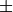.